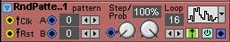

attached is a patch that demonstrates that rand/uniform i gives a repeating pattern when that range is set to 4.
rand_uniform_i_not_rand_at_4s.axp (1.2 KB)
Rand/uniform i not rand at 4, 8, 16...?
timvets
#1
yeah I think we need to review the generator....
@johannes, how about following one of these
http://static.usenix.org/event/usenix99/full_papers/deraadt/deraadt_html/node17.html
http://preshing.com/20121224/how-to-generate-a-sequence-of-unique-random-integers/
also id suggest a random start see e.g. use running time in nanoseconds as a seed
(assuming this can be go form firmware)
and have a method to set the seed, for patches we want to have a deterministic behaviour
@timvets in the meantime, I seem to get better results using larger values (say a prime), and then constraining that to my desired range... though I suspect that still will have some sequence.
johannes
#4
Current algo is for speed but obviously has shortcomings. I did not bother further as soon as it sounded white.
There is a true random number generator unit in the processor, but not sure how fast it is. Frequently seeding a fast pseudo-random algo with a hardware-generated seed is maybe a useful compromise.
anon5189335
#5
Hey 
I got a lot of good randomness out of that object. Didn't even notice that. But I also keep it at really high number like 8192 for true randomness.
But if I wanted to make some repeating random patterns on purpose, how would I go about that? If you guys are familiar with the G2, there is an module called random pattern. This one is really great for a lot of things like triggering sequencers, creating weird melodies. It will probably be hard to make a totally similar object. But the idea of implementing some randomness in a controlled fashion is appealing.
How would I set it to make the randomness start the same place everytime? Going to explore into it tonight

G2 module:
- The zeroes: this is the random pattern selectors
- Loop: select how long the loop is.
Those two are the main parameters.
timvets
#6
{kind=link}
NoobHowTo:: seeded random